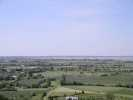
Hirel, c'est là, au fond de la baie. Oui, en arrivant, je suis monté sur le Mont de Dol pour avoir une vue d'ensemble...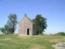
Le Mont de Dol, c'est un énorme rocher au milieu d'une plaine plate comme la main. Pour y monter, il faut passer la première ! En haut une chapelle, ...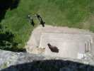
...une tour dans laquelle on peut monter pour jouir encore mieux du panorama (56 marches quand même...)...mais ça permet de faire de l'aérophoto sans cerf-volant !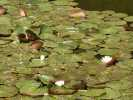
Il y a aussi une mare, la roche doit être bien étanche ! Et des nénuphars en fleurs...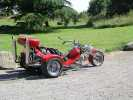
On peut monter là-haut pour le plaisir, et ça peut même valoir un grand voyage...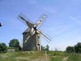
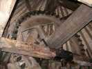
On peut même visiter l'intérieur du moulin. Ici l'axe des ailes avec son immense engrenage à dents en bois...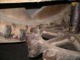
...qui entraîne un arbre vertical, bois sur fer, faut bien graisser... mais on peut changer les dents en bois usées !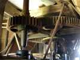
L'arbre vertical transmet le mouvement aux 2 jeux de meules et éventuellement à des servitudes (treuils, tamis,...). On voit le dessous d'une des meules, la partie dormante.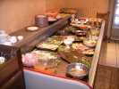
Dès le vendredi soir, repas au restaurant, contrairement à certain festival récent que je ne nommerai pas... Un buffet énorme, et un bon dessert.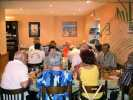
Pleins de membres du CVCF, plus des Pirates, déjà ce soir...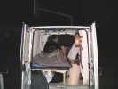
C'est pas tout, on va se coucher, moitié à l'hôtel, moitié en camping-car sur la plage, moitié au terrain de camping, belle pelouse accueillante !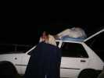
Jean-Michel a apporté le matelas pneumatique, mais pas le raccord pour le gonfler. Heureusement, il n'est pas venu seul !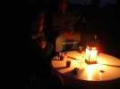
Jean-Michel a aussi amené une table ronde qui donne une ambiance très zen à la soirée Pirates...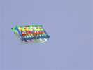
Oui, je vais vous parler un peu des cerfs-volants, attendez, quoi ! Le samedi débute avec ce joli multicellulaire, plus petit qu'on ne croit à voir la photo...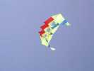
Un beau Wasseges coloré, aussi...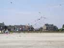
Ca se meuble peu à peu. François a sorti son arche, modeste, mais qui volera toute la journée !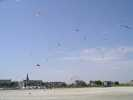
Finalement pas mal de monde, avec toutes les coccinelles préparées pour la circonstance !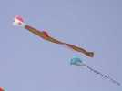
Deux beaux flow-forms, on reconnaît la patte celtique de Claude !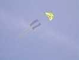
Et là, bien sûr, c'est Emmanuel qui a sorti un de ses chats. Les voiles noirs sont les pattes de devant (je précise, ce n'était pas évident pour tout le monde...).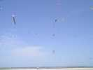
A 11 h, envol de coccinelles, ça en fait pas mal, on en espère encore plus à Dieppe ! Forme, structure et queues imposées, couleurs libres pour les élytres et les points. Mais on en a vu beaucoup de rouges à points noirs !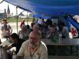
A midi, moules-frites avec participation financière réduite. Les moules, bien, mais les frites, fallait être TRES patient, comme on dit dans la pub sur le fromage !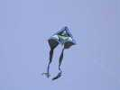
On retrouve aussi les couleurs de Claude dans ce pyrodelta modifié avec poche kangourou centrale...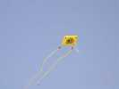
On revoit aussi ce beau gonflable éclatant avec ses queues tubulaires du même cru.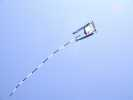
L'année derniere, le cv club celtique avait offert au maire ce CV aux armes d'Hirel, revenu voler cette année. Un peu instable, relire l'article du Lucane sur les brides transversales...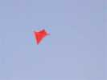
Sylvien a créé un nouveau cerf-volant, version minimaliste des Jessicas, mais il n'a pas encore trouvé de nom : Jess, Jes, J... !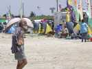
Le village de tentes s'est monté, il fait chaud. Même Gaby, pourtant tanné par le soleil, est en débraillé et non en habit de soirée...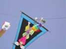
Claude a aussi une navette très décorée et qui fonctionne bien. Mais peu de public pour mériter un lâcher de bonbons...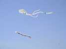
La queue fétiche du CVCF a pris place sous le méga CV de Vierzon, beau symbole de l'osmose entre le national et les clubs locaux...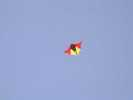
On a vu pas mal de Jessicas. Celle-ci n'a pas l'air en bonne santé, le créateur n'a pas dû respecter complètement les plans de Sylvien...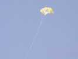
Par contre ce multi-sled à pois vole droit comme un I, et tire d'enfer !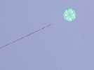
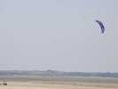
Les chars à voile de location en mettent un coup sur la plage, comme les chars à cerf-volant des Pirates (enfin, pas Yves, dont la clavicule est en suspens)...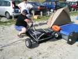
Mais Philippe sort d'une minuscule housse de 1 m 20 son arme secrète : un char à voile pliant. Tout est dans la housse : le châssis, le mât (5 tronçons de carbone emboîtés), la voile, les roues, l'essieu (en carbone), le guidon...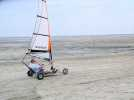
Philippe fait un petit galop d'essai et propose son kart à tous les volontaires. Bon, j'ai fait une fois un coup de char à voile... dans la Beauce, alors je suis expert, je me lance.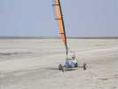
Ben c'est pas trop dur, et on s'amuse ! On va un peu moins vite que les chars à CV, mais pas beaucoup. Il faut seulement un vent assez soutenu, sinon eux roulent et pas le kart.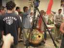
Samedi soir, Salle des Fêtes : le barbecue ressert, avec du jus d'orange... amélioré dans la sphère. Les dames qui finiront les quartiers d'orange du fond à la fin seront très gaies...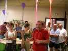
Daniel communique quelques informations CVCF, en particulier sur la participation à Dieppe.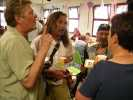
Les Pirates font une entrée remarquée, en tenue de pirates très réalistes ! Yves a quand même la force de tenir sa pipe...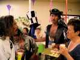
Jean-Michel, c'est lui, avec le tricorne ! C'est un chapeau de pirate, ça ?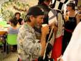
Mi-mi, lui, a le vrai foulard de pirate...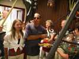
Gaelle est bien sûr de la partie, l'est ben mignonne comme ça. Mais son copain Xavier, lui, n'a pas l'honneur d'être Pirate...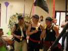
Et toutes ces dames piratesses sont aussi sur leur trente-et-un...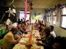
Bon, c'est pas tout, à table maintenant, et du solide. On aura un couscous mitonné pour nous remettre des efforts de la journée...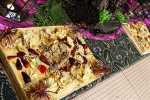
Et au dessert, un gâteau confectionné spécialement pour le CVCF, et succulent en même temps, on s'en lèche les doigts !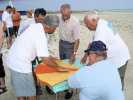
Le lendemain, peu de vent. Joël part dans un cours sur la fabrication des montgolfières en papier !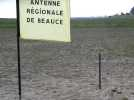
François a amené son nouveau dévidoir. Simple et pratique, mais il ne contient pas beaucoup de fil, faudra rajouter des flasques...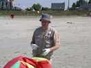
Une grande première : François avec des gants. Faut dire qu'il fallait voir ses mains toutes brûlées après un sauvetage violent !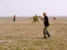
Cette tortue avec ses pattes rigides et sa couleur écaille m'a bien plu. Elle n'a pas beaucoup volé faute de vent, mais n'empêche !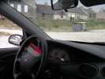
Michel Renouis est venu au cerf-volant indoor, ou plutôt in-car : quand il met la ventil ou qu'il roule, la rosace décolle et se met à tourner...